Studio: Behavior
How do you make an enemy smarter, or meaner, or just different, without a programmer in the loop? You do it here.
Behavior mode is where enemies get their brains: the behavior tree that decides what a soldier does each moment,
the scoring that picks an intent in a fight, the squad personalities, the soldiers' difficulty
(content/defs/ai/tuning.json) and the enemy variants (enemies.json) that the levels, the mission and the director
spawn.
The best part? You never tune blind. The whole mode sits on top of a sandbox: the game's grey-box range, with real soldiers fighting in it, using your data the moment you change it (saved or not).
How to open it
Click Behavior on the mode bar at the top, or start Studio straight in it:
dotnet run --project src/LastFleet.Studio -- --mode behavior
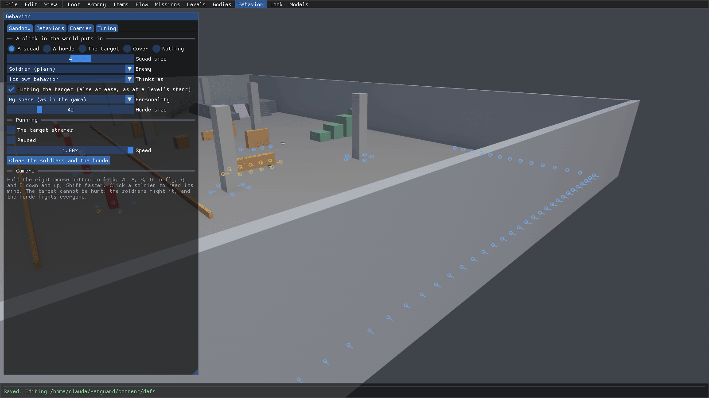
Here's the tour:
- The panel on the left has four tabs: Sandbox (what a click in the world puts in, and the fight's controls), Behaviors (the tree editor and the scoring graph), Enemies (the variants) and Tuning (the difficulty). Drag its right edge to make it wider. The Behaviors tab is a lot happier with room to breathe!
- The world behind it is the sandbox, seen from a free camera. Hold the right mouse button to look around, and fly with W, A, S and D. The rings on the floor are cover points (more on those below).
- The soldier panel pops up on the right when you click a soldier.
Put a squad in and read a soldier's mind
So you want to see why a soldier does what it does? Drop a squad in and ask it.
- On the Sandbox tab, leave A click in the world puts in on A squad. The settings under it are for the
squad: its Squad size, the Enemy variant, what it Thinks as, whether it's Hunting the target, and its
Personality (
By share (as in the game)picks one the way a level does). - Click the floor across the range. The squad appears and goes Hunting the target. Over each soldier is what it's
doing, with its squad's personality and its role underneath (
Steady Suppressor,Steady Rifleman). - Tick Paused under Running so they hold still for you.
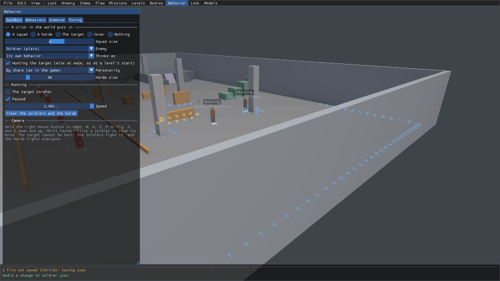
- Click a soldier. The Soldier panel opens on the right and "reads its mind": its squad, personality and role,
what it's doing and why (
Hold, because nothing pressing), its inputs (health, the target, range), each intent's score (with the stickiness,+0.10, on the one it's already doing), and what every personality would choose in its place right now.
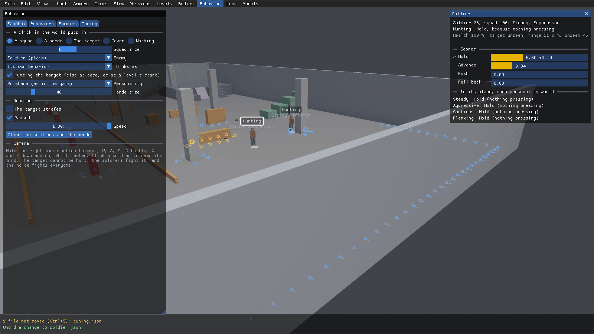
Nothing here is saved, it's just for watching. Clear the soldiers and the horde empties the range when you're done.
Test cover
Soldiers pick their cover from cover points, so if a crate gets ignored in a level, this is where to find out why.
- Pick Cover next to A click in the world puts in. Leave it on Low (crouch behind), and keep Show the cover points soldiers choose from ticked.
- Click the floor. A box goes down with its broad side to the target, and yellow rings show up around it: those are the spots a soldier can crouch behind it. The panel now has the box's exact Base, Width, height, depth and Turn, so you can line it up exactly.
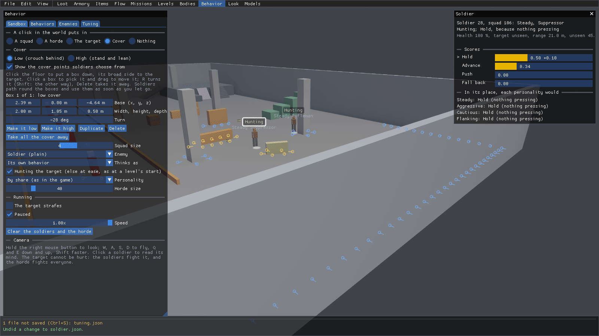
- Click Make it high. The box grows to 2 m and the rings turn blue: now a soldier stands behind it and leans out.
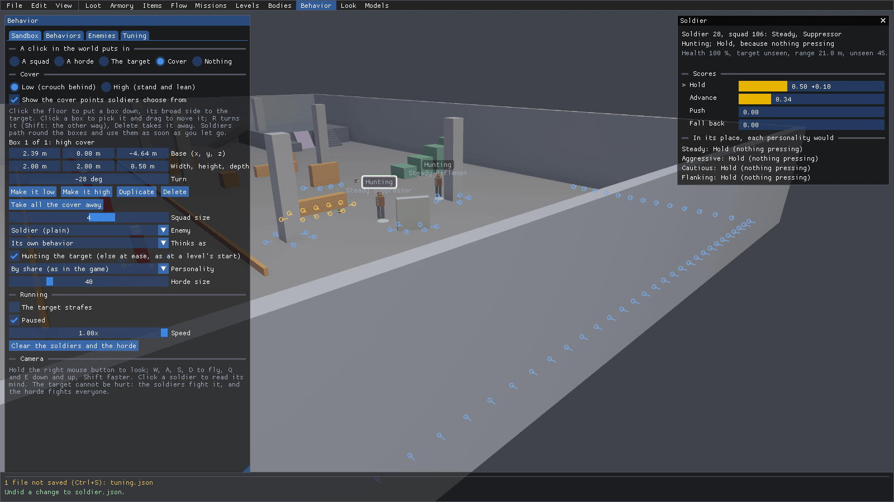
Soldiers treat these boxes just like the level's own walls and crates, as soon as you let go. They're only for trying out the AI though, so they're never saved.
Read and edit the behavior tree
A behavior's tree runs from its root every tick. Flow nodes run their children top to bottom, conditions check things, and actions do things. If you've used Unreal's behavior trees, you'll feel right at home.
- Click the Behaviors tab, and drag the panel's right edge across so the canvas has room. Pick the behavior in the
box at the top left (
Soldier (soldier.json)). Next to it is what it Needs of a body (fire, reload, throw, crouch, lean, blindFire), and the toolbar has + New behavior, Duplicate, Delete, Tree or Scoring, Tidy and Fit.
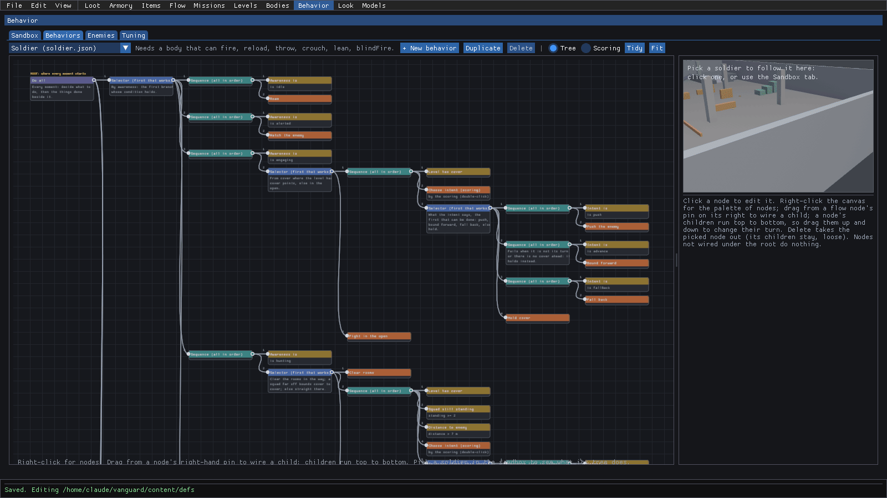
- Click the Bound forward action. The panel on the right says what it does in plain words, then its settings: the action (picked from a list, never typed), a Note, its id, and Make it the root, Take it from its parent, Duplicate and Delete.
- Click the Note field, type
Leapfrog: back soldier firstand press Enter. The note shows up on the node itself, and the status bar says1 file not saved (Ctrl+S): soldier.json. Notes are just for designers; the game never reads them.
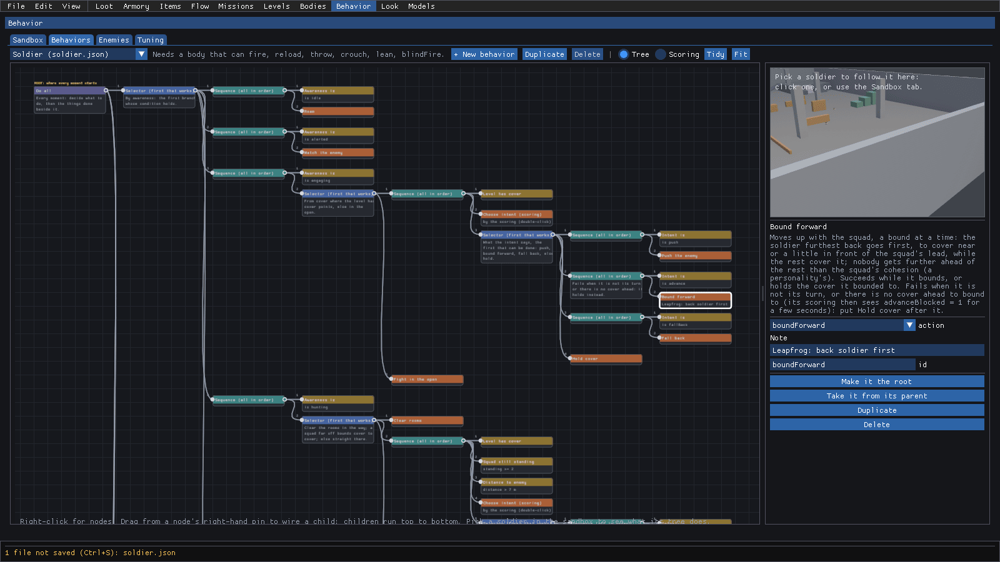
- Now see it live. Pick a soldier in the sandbox (see above) and come back to this tab. The view on the right follows
that soldier, and tells you who it is and what it's thinking as (
Soldier 28: Soldier, thinking as Soldier).
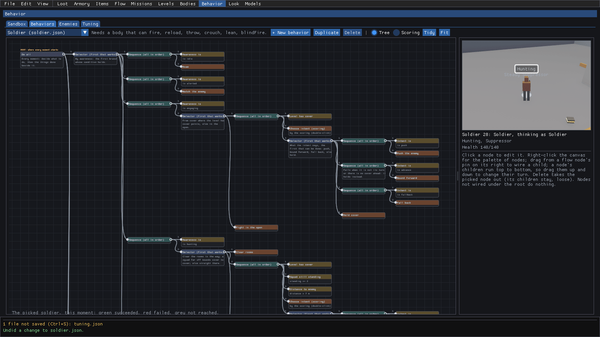
Every edit reaches the soldiers right away, before you save. Ctrl+S keeps it, Ctrl+Z undoes it (the status bar says
Undid a change to soldier.json). Wiring new nodes in (right-click for the palette, drag from a pin) is covered in the
tree editor reference.
Score an intent
Choose intent is the one action that weighs things up. It scores four intents (hold, advance, push, fall back) and the soldier does the best one. That's utility AI, and its numbers live in the scoring graph.
- Still on Behaviors, pick Scoring on the toolbar. It reads left to right: the inputs (
ownHealth,range,suppressed...), then the conditions, terms and factors with their curves drawn, then the four intents, then the personalities.
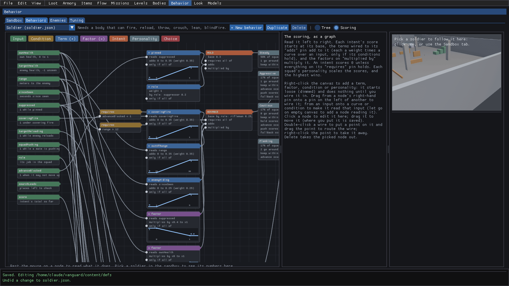
- Click the outOfRange term. Its curve is drawn large on the right, along with what it does in plain words: it adds to ADVANCE's score, 0 at 20 m or less, rising evenly to its weight (0.35) at 30 m and beyond. Under the curve are the reason shown over a soldier's head when this term wins, and adds at most (its weight).
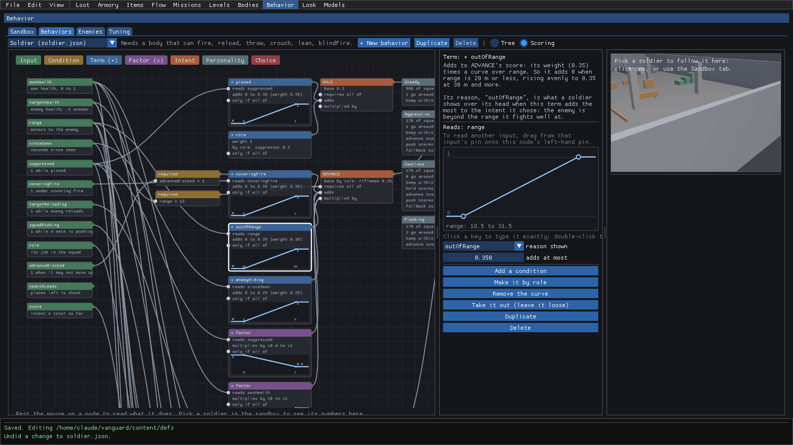
- Pick a soldier in the sandbox, and the graph lights up with its numbers: the inputs show its values (
range 21.82,role suppressor), each term shows what it adds right now, the conditions say whether they hold, and the intents show their scores (HOLD 0.50, ADVANCE 0.34).
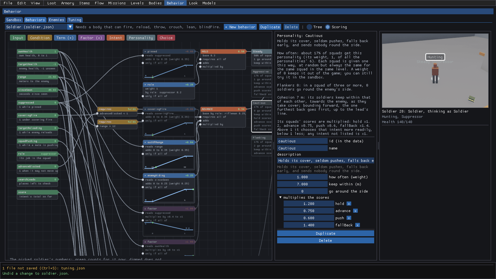
- Click the Cautious personality on the right. A squad's personality scales each intent's score, sets how many go around the side (go around the side), and how far apart they keep (keep within (m)). Here you can see why a cautious squad holds and falls back: hold ×1.2, fall back ×1.4, push ×0.6. how often (weight) is its share of the squads.
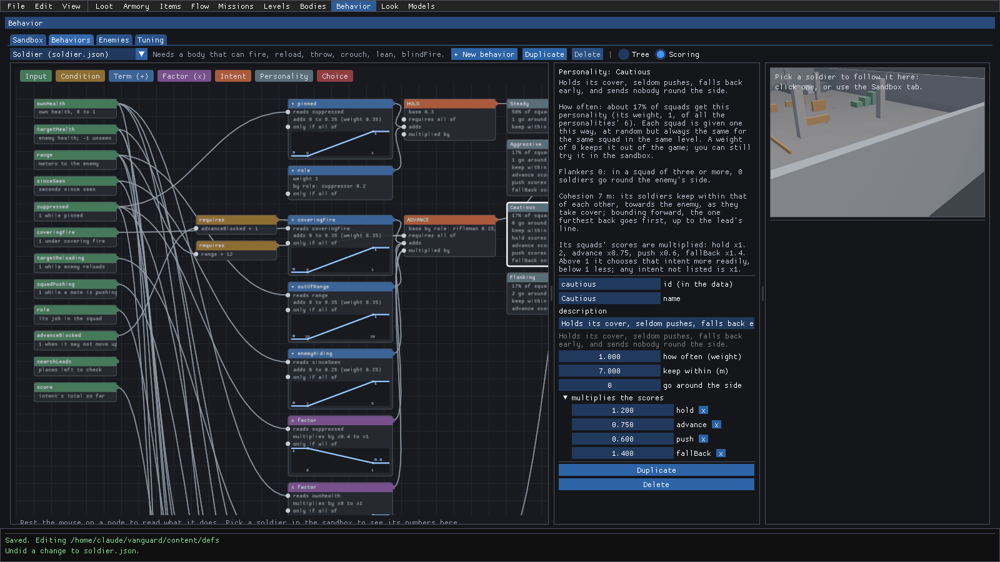
Edits here save with Ctrl+S and undo with Ctrl+Z, like the tree. Click a curve's key and its exact input and value show up under the curve, ready to edit. Adding terms, wiring them in and shaping curves are all in the scoring graph reference.
Tune how hard a side is
Difficulty comes from reactions, aim and coordination, never from health. No bullet sponges here! These are the same values as the game's F3 AI overlay, as data.
- Click the Tuning tab. Shared is what every side's soldiers fight with, grouped into Awareness, Lethality, Tactics and the rest. Hover over any value to see what it does.
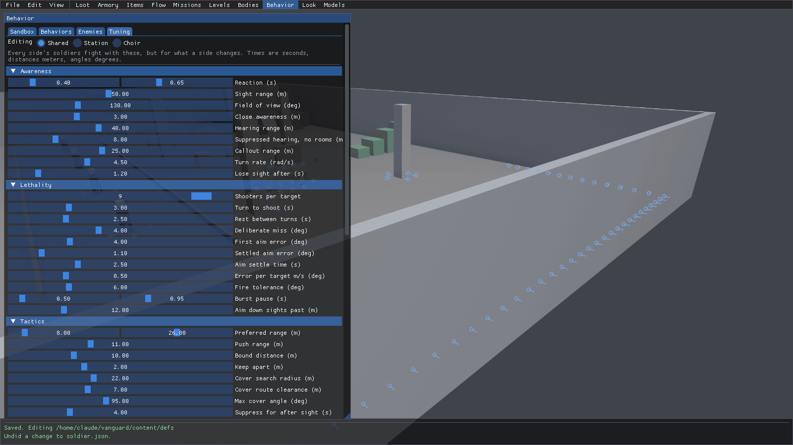
- Pick Station next to Editing (the garrison). Every value now has a checkbox in front of it.
- Tick Settled aim error (deg), then click its number, type
2.5and press Enter. It turns amber: that's Station changing it for itself. Station (1) counts the values it changes, andtuning.jsonis flagged as not saved.
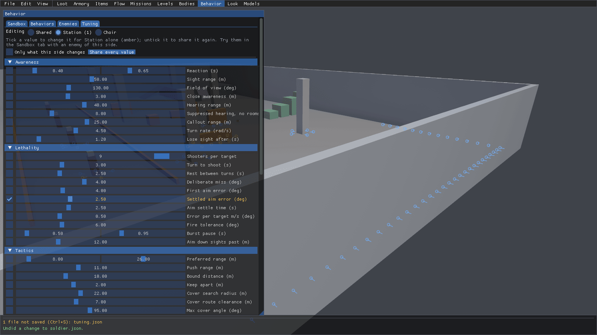
- Tick Only what this side changes to see just the values this side overrides.
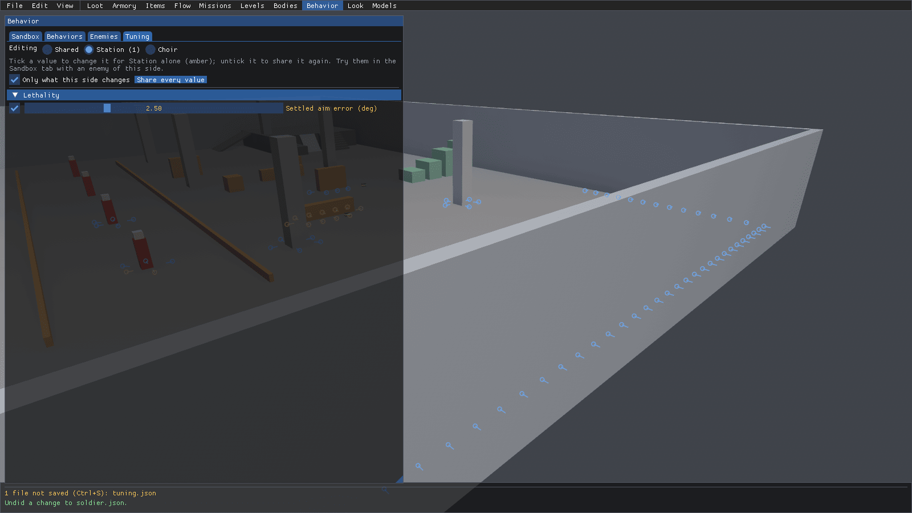
Spawn a station squad in the Sandbox to feel the difference. To undo it all, Share every value puts the side back
on the shared values. Ctrl+S writes tuning.json, and the game reads it
when it starts.
Look at an enemy variant
A squad is all one variant: what it looks like, what it carries, where it spawns and how it thinks.
- Click the Enemies tab and pick
lancer. Its behavior and faction are picked from lists, then its body: health, damageScale, grenades, runSpeed, sprintSpeed and dropsLoot. Under weapons is how often it carries each frame (the Armory's frames), and + add frame... adds another.
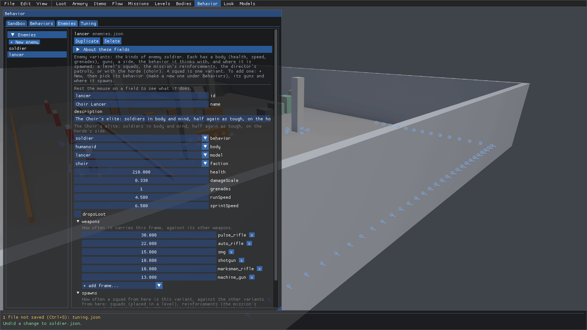
- Scroll down. spawns is how often a squad from each source is this variant (the lancer only comes with the choir), and clips are the body's clips it plays its own versions of (none here, so set to add some).
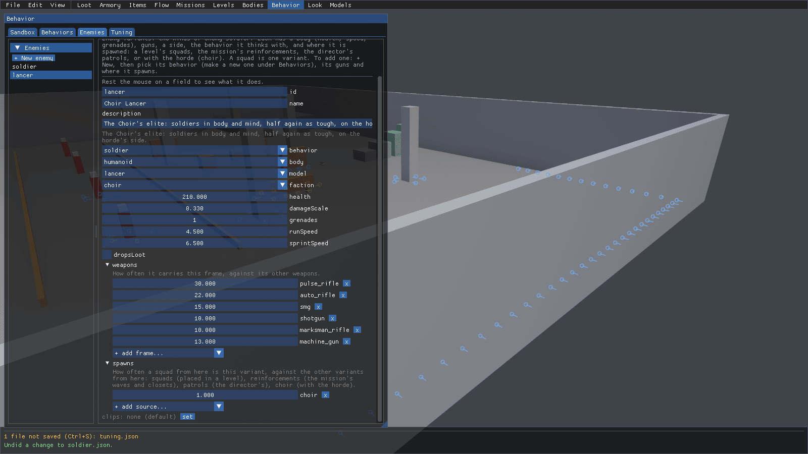
Want a brand new enemy? That's + New enemy at the top of the list, and the enemy variants reference walks through it. Then pick it under Enemy on the Sandbox tab to watch it fight, and look at it in Bodies mode under Variant.
Where to next
- The full reference is Behavior: how enemies fight: the behavior tree, tuning, scoring and personalities, the tree editor, enemy variants and the sandbox.
- To see a variant's model and clips on a turntable, head to bodies.md.